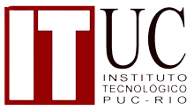

Formação Acadêmica
Mestrado em Engenharia de Processos Químicos
Pontifícia Universidade Católica do Rio de Janeiro
Período: Jan 2019 – Ago 2021
Bacharelado em Engenharia Química
Pontifícia Universidade Católica do Rio de Janeiro
Período: Jan 2013 – Dez 2018
Intercâmbio acadêmico na área de Engenharia Química
Pontifícia Universidade Católica do Rio de Janeiro
Período: Jan 2017 – Ago 2017

Cursos Complementares
Python e orientação a objetos
Alura
HTML e CSS
Alura

Experiência Profissional
Engenheiro de Projetos em Engenharia e Computação
Instituto Tecgraf
Período: Set 2021 - Atualmente
Geração de relatórios técnicos e administrativos
- Escrita e apoio na geração de relatórios técnicos e administrativos para clientes
- Desenvolvimento e edição de relatórios em formatos de vídeos, permitindo fácil entendimento do cliente de pontos técnicos;
- Escrita de pareceres técnicos.
Gestão de pessoas
- Gestão de estagiários, delegação de competências e supervisão de trabalho;
- Mediação de conflitos entre equipes.
Projetos de P&ID
- Desenvolvimento, criação e escrita de projetos de P&D;
- Atuação em projetos voltados para áreas de Ciências da Computação, Engenharia Química e Mecânica.
Pesquisador em projeto na área de Manufatura Avançada e Indústria 4.0
Instituto Tecnológico da PUC-Rio – ITUC
Período: Ago 2019 – Ago 2021
Geração de relatórios técnicos e administrativos
- Escrita e apoio na geração de relatórios técnicos e administrativos para clientes
- Desenvolvimento e edição de relatórios em formatos de vídeos, permitindo fácil entendimento do cliente de pontos técnicos;
- Escrita de pareceres técnicos voltados para a área de corrosão, manufatura avançada e propriedades de materiais.
Gestão de pessoas
- Gestão de estagiários, delegação de competências e supervisão de trabalho;
- Mediação de conflitos entre equipes.
Projetos de P&ID
- Atuação em projetos voltados para áreas de Engenharia Química e Mecânica.

Estágio em análise e controle de qualidade
ILaboratório de Caracterização de Águas da Pontifícia Universidade Católica do Rio de Janeiro
Período: Ago 2018 – Dez 2018
Competências:
- Análises físico-químicas de amostras de água;
- Análises físico-químicas de amostras de filtros de ar;
- Análises físico-químicas de amostras de de solos;
- Geração de relatórios técnicos.